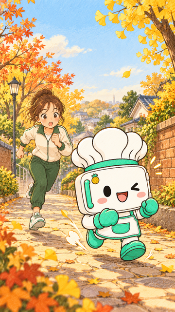
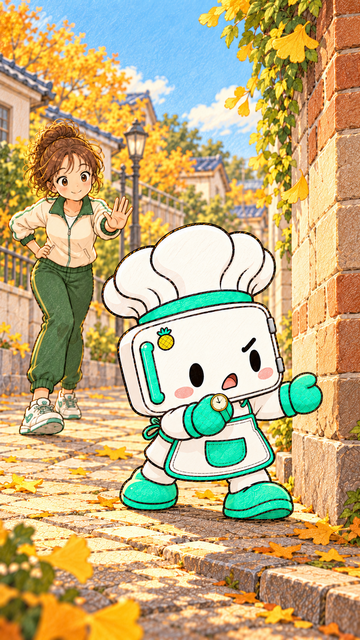
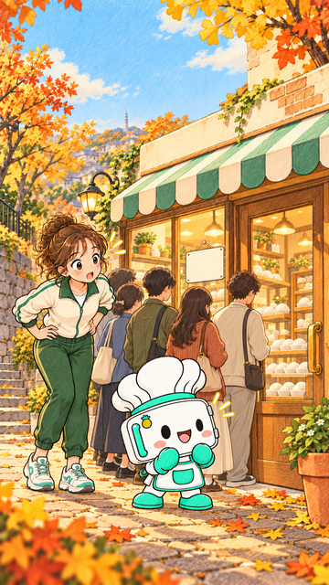
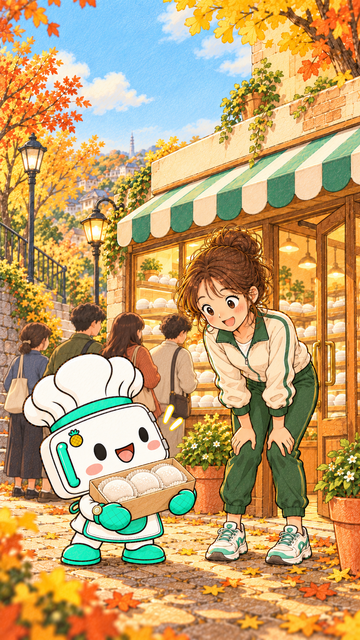
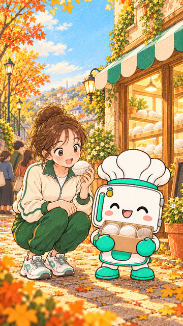

대기줄과 흰 찹쌀떡을 반영한 세로 원화 5장 검토본입니다. 1·2컷은 유지하고 3~5컷을 수정했습니다. 대사·말풍선·운영시간 표지·브랜드 문구는 영상 단계에서 별도로 조판합니다. 아래 대사는 장면 맥락을 확인하기 위한 설명입니다.
다섯 장 한눈에 보기 · 선택 파일 기록 · 생성·수정 프롬프트
0~2초 예정

여성: “장고가 이렇게 빨랐어?”
2~6초 예정

장고: “늦으면 끝이야!”
6~10초 예정

여성: “…찹쌀떡?”
10~16초 예정

여성: “러닝 하자며?” / 장고: “오픈런도 런이잖아.”
16~20초 예정

너는 러닝파, 오픈런파?